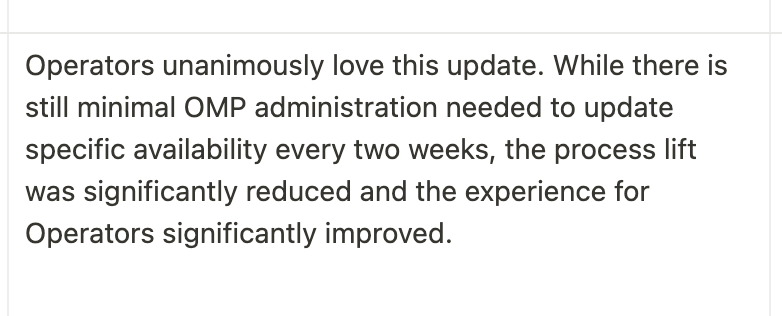
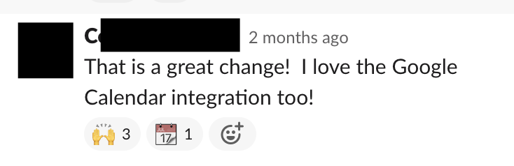
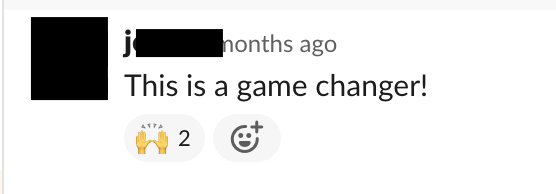
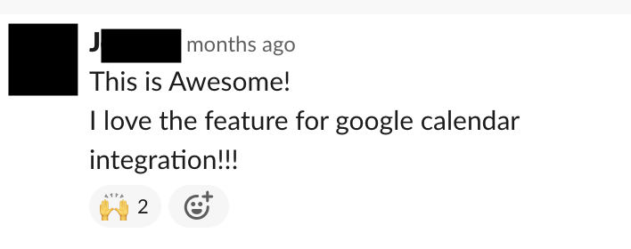
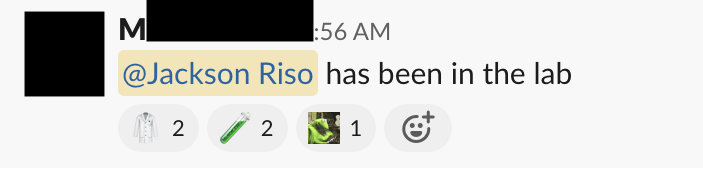
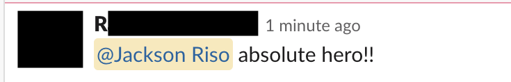
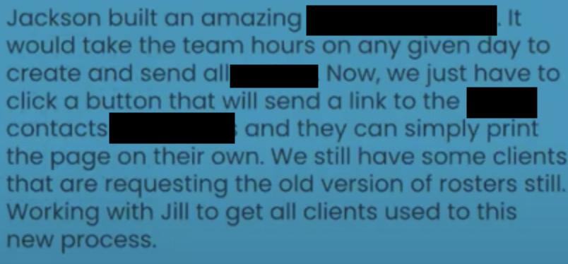

“From the first call, I knew Jackson was the most knowledgeable person I had talked to about business automation.”
Connect the Systems Slowing Your Business Down
Systems Integration Consultant for Growing Companies
I help companies connect the tools they already use, reduce manual re-entry, fix broken handoffs, and make operational data more reliable.
- Hands-on implementation, not just technical recommendations
- Meaningful improvements are often identified within the first 2 weeks
- Full documentation, weekly meetings, and team training included

Format
Embedded consulting
Start
30-minute diagnostic
Typical first win
Within 2 weeks
Proof
I bring what clients value most.
The most consistent feedback I get is that I can understand a messy system quickly, identify where the handoffs are breaking down, and make practical changes that reduce friction fast.
“Jackson has the incredible ability to understand business problems, build functional products quickly, and adjust on the fly. I just wish we had found him 6 months earlier.”
“Jackson’s superpower is his ability to automate nearly everything he touches.”
The Problem
Your tools are supposed to make the business easier to run.
Instead, they are creating more work.
The CRM says one thing. Your forms say another. The scheduling tool is missing context. Reporting has to be stitched together manually. Billing is disconnected from operations. Important information gets trapped in one system and never makes it where it needs to go next.
So the team compensates. People copy and paste the same information into multiple places. They chase updates across tools. They build workarounds on top of workarounds. Every broken handoff creates more manual labor, more confusion, and more room for error.
At a certain point, the problem is no longer that you have too many tools. The problem is that your business is relying on disconnected systems that were never designed to work together properly. The business loses time, visibility, and trust every day.
You know the stack is not working the way it should. That's where I come in. Learn how
How I Work
Start with a free diagnostic call.
We get on a free 30-minute call, and you walk me through where work is breaking between systems, which tools are creating friction, and what feels more manual than it should.
My goal on that first call is to add value immediately. If we agree we're a good fit, all services are month-to-month for as long as it is useful. Quit anytime.
For nearly every client so far, I have been able to onboard and make improvements within the first 2 weeks.
Book Your Free DiagnosticHands-on consulting, not abstract technical advice
What I do
How the work happens
What you get
Practical outcomes for you and your team
Stage 1
Audit the stack and trace the breakdown
I onboard quickly, review the current tools, trace how information is supposed to move, and identify where the system is breaking down in practice.
Clarity on what is actually wrong
You get a clearer picture of which handoffs are failing, which mismatches are creating manual work, and where the fastest wins are.
Stage 2
Work with the right people and set priorities
I work with 2 people on your team: one who sees the bigger picture, understands the goals of the company, and can help me set priorities (the C-suite), and one person who is doing the day-to-day work, feeling the pain of these broken systems, and can give me direct feedback on the tools and workflows I am improving.
Solutions shaped by business goals and operational reality
The work reflects both the strategic priorities of the company and the real day-to-day friction your team is dealing with.
Stage 3
Implement the highest-impact fixes
I make the necessary changes directly. That may include integrations, workflow cleanup, field mapping, system redesign, automation, or reporting fixes.
Cleaner handoffs and less manual work
Your team spends less time copying data, fixing avoidable errors, and chasing information across tools.
Stage 4
Meet weekly to discuss progress and align on what comes next
We meet weekly to review progress, align on what comes next, document the system clearly, and train the team so the improvements actually hold up.
A system your team can actually run
You get better visibility, stronger adoption, and a setup that is easier to trust and maintain after the work is done.
Fit
Who is this for?
Companies whose tools have multiplied faster than their operating system.
Strong fit
- Your business runs on multiple tools that do not work well together
- Teams are compensating for broken handoffs manually
- Reporting depends on spreadsheets, exports, and manual cleanup
- Leadership wants cleaner operational visibility
- You want someone who can both diagnose the problem and implement the fix
- You want a system the team can actually run after the work is done
Probably not a fit
- You only need one tiny app connection and nothing else
- Your problem is primarily branding, messaging, or lead generation
- You want advice only, with no implementation support
- You are not willing to simplify or change the current way the tools are being used
The Results
What does this mean for your business?
While I can't share exactly what I have built for other clients because I have signed NDAs, throughout this page I have posted anonymized real client reactions to things I have built. Here are a few more:







FAQ
Frequently Asked Questions
What happens on the first call?
Over about 30 minutes, you walk me through where work is breaking between systems, which tools are creating friction, and what feels more manual than it should. I ask questions, help identify the real breakdown, and aim to give you useful perspective on that first call whether we work together or not.
What happens after the first 30-minute diagnostic?
About 20% of the time, there is a fit, and I will let you know. If you agree, we'll quickly outline what we hope to accomplish in the first 2 weeks to 3 months. From there, we can discuss my month-to-month and begin diagnosing, prioritizing, and implementing the highest-impact changes.
About 80% of the time, potential clients don't actually need my help, they just need to make one simple change. I'll tell you what change to make and send you off to go make it. If, after making that change, you still think you need my help, we can always hop on another call.
How quickly do you usually start finding opportunities to improve things?
Often very quickly. Usually, within the first call. In most cases, I am able to onboard fast, identify meaningful opportunities early, and begin implementing changes within the first 2 weeks.
How quickly can we start?
Currently, I onboard one client per month. If there is a fit, I try to get into the business fast so I can start learning the system, meeting the right people, and identifying the first areas to improve.
How involved do I and my team need to be?
You do not need to be involved in every detail, but I do need enough access to understand the business, align on priorities, and get feedback as the work progresses. The goal is not to create more work for you. The goal is to make the right changes with the right level of visibility.
Ideally, I work with one person who sees the bigger picture, understands the company goals, and can help me set priorities (perhaps you?), and one person who is closer to the day-to-day work and can give direct feedback on what is not working.
Do you work directly with the team, or only with leadership?
Both. Part of the process is embedding into the team enough to understand how the work really happens. I work with leadership for priorities and with the people doing the day-to-day work so the changes are grounded in reality.
What kinds of problems are the best fit for this work?
The best fit is when growth is exposing systems cracks: disconnected tools, manual re-entry, fragile reporting, broken handoffs, too much cleanup work, and teams spending too much time fighting the stack instead of using it.
Do you work with our existing tools, or do you replace them?
I start by working with what you have. There are often enormous improvements we can make with your existing tools. If I think a new tool will bring a worthwhile ROI, I'll let you know, we'll discuss it, and I'll present my plan to seamlessly transition over.
What kinds of tools do you usually work with?
Usually some combination of CRM, forms, scheduling, billing, reporting, internal databases, and automation tools. The exact stack matters less than whether information is moving cleanly between the right parts of the business.
Do you only advise, or do you actually implement the changes?
I would lose my mind from boredom if I only advised. I love rolling up my sleeves and getting my hands dirty. I implement the changes directly. I do not just identify what should happen. I help make it happen.
What do documentation and training actually include?
My processes are both internally and externally documented. Internal documentation means that all processes follow a standard format, nomenclature, and numbering system. From within the process, it's easy to see what comes next. External documentation means the process, systems, and decisions are written down clearly enough that the work can be maintained. Training means I work directly with the people who need to use the system so they understand it, trust it, and can run it well.
Do you train the team too?
Yes. The way I work, the team are incentivized to learn the new system. I promise you, your team does not love the chaos any more than you do. If my new systems make their lives easier, they'll be excited to use them. Team training is an important part of the work. A better system is only useful if the people running it understand it and trust it.
Start Here
Bring me the broken systems, and I'll take care of the rest.
If your systems feel messy, disconnected, or harder to trust than they should be, start with a simple conversation. Bring me the workflow issues, reporting mismatches, manual workarounds, and broken handoffs you are dealing with, and I will help you get clearer on what is actually broken, so that we can solve it together.
Book a Free 30-Minute DiagnosticFor nearly every client so far, I have been able to onboard and make improvements within the first 2 weeks.